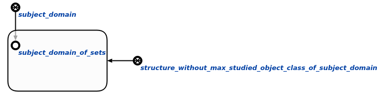

Команда пользовательского интерфейса для проверки наличия максимального класса объектов исследования у предметных областей предназначена для проверки наличия у предметных областей максимального класса исследования. Единственным аргументом запроса является знак структуры, элементы которой будут проверяться. Результатом выполнения команды является занесение всех предметных областей, для которых не указан максимальный класс исследования, в структуру, содержащую предметные области, для которых не указан максимальный класс исследования:
